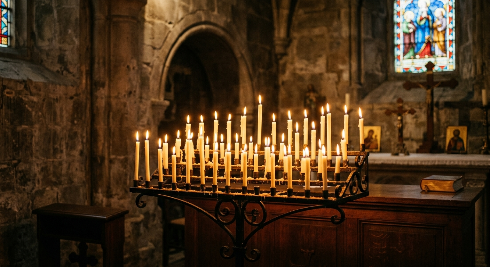
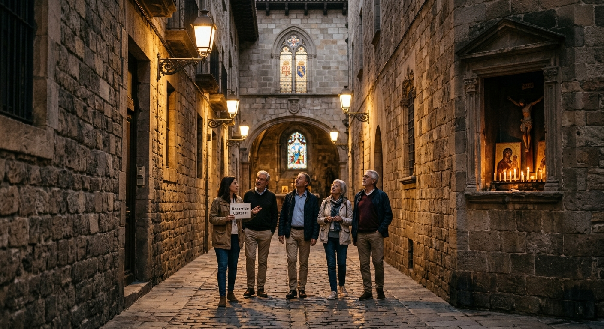
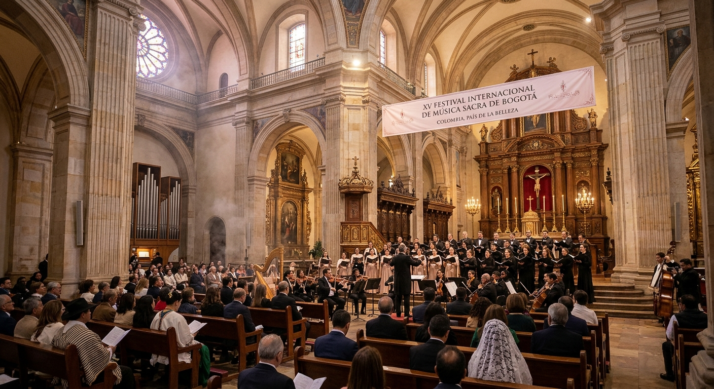

Encuentro de oración.
Acompáñanos como comunidad en este tiempo especial de oración y recogimiento. Todos son bienvenidos a participar y compartir sus intenciones.
Mantente al día con la vida de nuestra parroquia. Aquí encontrarás las próximas celebraciones, encuentros culturales, jornadas de oración y avisos importantes para compartir y crecer juntos en la fe.

Acompáñanos como comunidad en este tiempo especial de oración y recogimiento. Todos son bienvenidos a participar y compartir sus intenciones.

Descubre la historia viva, la arquitectura colonial y los secretos guardados en los rincones más emblemáticos de nuestro centro histórico. Un paseo guiado pensado para conectar con el patrimonio, el arte y la tradición de la ciudad en un ambiente cercano y enriquecedor.

Disfruta de una velada inolvidable de recogimiento y elevación espiritual a través de las grandes obras del repertorio sacro. Interpretado en un entorno arquitectónico único, este encuentro musical ofrece una acústica incomparable que invita a la contemplación y al deleite artístico.